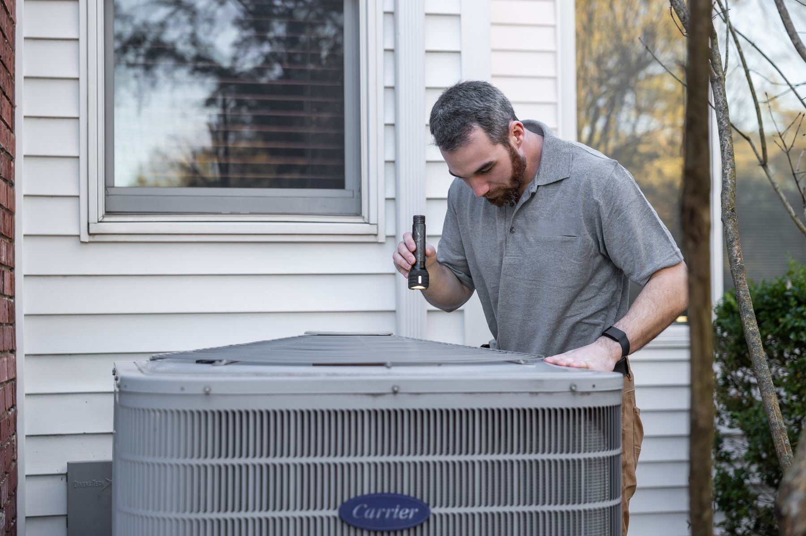

Answer the questions that hold them up
“Do you come to my area?” “What does the visit cost?” Give visitors answers from your business details, with room to ask the next question.
AI chat for home-service websites
Your AI front desk answers website questions, gathers job details and captures visit requests while you work. Come back to the customer’s problem, address and contact details, ready for your next conversation.
Free setup. No card required.

You handle the work. We’ll handle the first questions.AC not coolingTomorrow, 12 to 5
Job details together. Ready for your follow-up.HVAC Plumbing Electrical Home services
Less chasing. Better conversations.
“Do you come to my area?” “What does the visit cost?” Give visitors answers from your business details, with room to ask the next question.
The problem, the address, the right phone number. Your front desk gathers what you need to understand the request before you get back in touch.
Open the request and read the conversation beside it. See the questions, corrections and preferred visit window together, ready for follow-up.
See it work
A service-area question. A concern about price. A change of phone number. Watch the front desk handle the conversation, then put it to the test yourself.
See how the chat explains a diagnostic fee, collects a request and keeps a corrected contact number with it.
Bayou Air & Heat serves Katy, Cypress, Memorial, the Energy Corridor, Sugar Land and Richmond. The $89 diagnostic goes toward the repair. Repairs are quoted on site. Requested arrival windows: 8 to 12 or 12 to 5; exact times are not promised.
An example conversation. No actual appointment or message is created.
Optional voice practice demo. This does not turn on phone answering for your business. You can also type a request below.
Start with your website
Give customers a conversation that helps them take the next step.
Free to get started
A helpful first response. A clearer customer request.
Explore the planned service levels below. Choose your preference during free setup, or talk with us about your call volume and the way your team works.
Coverage
Phone and text plan preview
$99/ month
For smaller shops with lighter call and text volume.
Explore CoverageFollow-through
Phone and text plan preview
$249/ month
For busy teams with more customer conversations to handle.
Explore Follow-throughEnterprise
Built around your business
Custompricing
For multiple locations, larger teams and a tailored rollout.
Let’s talkChoosing a plan saves your preference. We’ll confirm the service, included usage and terms with you before any paid service begins.
Sound like your business
You know what your customers need to hear. Your front desk uses your services, prices and instructions to keep the conversation grounded in the way you work.
Meet the founderExplain what your diagnostic fee covers. Keep repair quotes for the inspection. Customers get a clear answer before requesting a visit.
Offer the arrival windows you set. Collect the customer’s preference and contact details, with the visit left for you to confirm.
A replacement estimate or a question about past work needs your experience. Keep the request and conversation together so you can take it from there.
Yes. Add your services, fees and hours, then try the questions customers ask you every day. Adjust the answers until they sound right for your business.
“Can you fix this?” “Do you cover my address?” “What’s the diagnostic fee?” Your front desk uses your saved answers, asks about the job and collects a request for your team.
In your workspace, with the full conversation beside each request. See the problem, location, contact details and preferred visit window, then decide your next step.
You do. The chat gathers the customer’s preferred window from the availability you set. Your team reviews the request and confirms the visit with the customer.
Yes. Visitors can chat in English or Spanish. Try the Spanish example and see the customer’s conversation alongside the owner’s summary.
Your workspace includes the chat installation code and a setup guide for your website. Add it yourself or share it with your website manager, then test a request from your site.
Your saved fees and quoting instructions guide the answer. If you quote repairs after an inspection, the front desk explains that and gathers the details for your follow-up.
Your safety and urgent-contact instructions guide the response. Keep a direct emergency contact visible on your site: a saved website request is not a live emergency dispatch.
No card is needed. Create your front desk, try it with your business and review the website-chat allowance in your workspace before activation.
Try it with your business
Tell us a little about your business. We’ll help you build a front desk that knows your services, asks the right questions and keeps customer requests ready for your team.
Free to set up · No card required
Have questions? Let’s talk